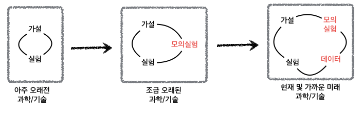

데이터 과학자가 바라본 20대 총선
과학기술과 함께 하는 패러다임의 변화
더불어민주당의 경우 경제민주화를 제일 선거공약으로 내새울 정도로 정치와 경제가 밀접한 관련이 있고, 과학기술과 경제발전의 중요성은 이공계를 중시하며 고도 성장가도를 달려온 대한민국을 통해 확연히 나타나고 있다. 이제, 경제를 컴퓨터 발전을 이해하지 않고 활용하지 않는 경우 오히려 쇠락을 걱정할 정도로 영향력이 커진 것도 사실이다. 과거 단순한 계산기의 역할에 머무르지 않고, 컴퓨팅 사고, 인공지능, 3D 프린터, 소프트웨어, 데이터과학 등 다양한 분야에 파급력을 급격히 높이며 전통산업을 와해시키고, 혁신의 가속도를 높여가고 있으며, 정치도 예외는 아니다.
정치 경제학
정치경제학(政治經濟學)은 원래 생산, 매입과 매각 행위, 그리고 이들 행위들이 각각 법, 관습과 정부와 맺는 관계를 연구하는 학문으로, 18세기 당시 국가 경제를 연구하면서 발달하였다. 국가는 “정치 주체”라고도 불리는데 정치경제학이라는 단어에서 “정치”는 이에 유래한 것으로, 토지 소유 여부를 부의 원천으로 여기는 이론과 이에 반해 노동 가치론을 주장한 학자도 있다.1
패러다임의 변화
과학기술이 국민총생산에 지대한 영향을 미친 것은 세계은행 보고서를 통해 알려졌다. 특히, 한국개발연구원(KDI) 출신 연구원들이 세계은행에서 발간한 ‘’Korea as a Knowledge Economy : Evolutionary Process and Lessons Learned’’ 2 에 따르면 과학기술에 대한 기여분이 노동과 자본 에 대한 기여분보다 월등히 1인당 국민총생산(GDP)에 기여하는 것으로 나타난다. 상대적으로 멕시코의 동일기간 성장률에 비해 한국의 경제성장에 대한 기여를 확연히 알수 있다.

과학기술 패러다임의 변화
과거 가설을 갖고 이를 수학적 도구를 통해 머릿속으로 상상하고 이를 실험을 통해서 과학기술을 진전시켜 나가는 과정이 수백년동안 지속되었다. 물론 이 기간동안 수학도 엄청난 발전을 이루었다. 특히 미적분을 빼놓을 수는 없다. 조금 오래된 과학기술로 지금도 여전히 유효한 과학기술 발전 방법은 컴퓨터를 활용하는 것이다. 선형대수와 접목된 컴퓨터 기술은 실험을 직접적으로 수행하지 않고도 모의실험을 통해서 더 적은 비용을 들여, 더 정확하고, 더 빨리 과학기술을 발전시킬 수 있게 되었다.
현재 및 가까운 미래에는 가설, 실험, 모의실험에 더하여 많은 데이터가 사용가능하게 됨에 따라 데이터에서 좋은 가설을 만들어 내고 이를 실험으로 증명하는 사례도 늘어나면서 패러다임의 변화가 목도되고 있다.
